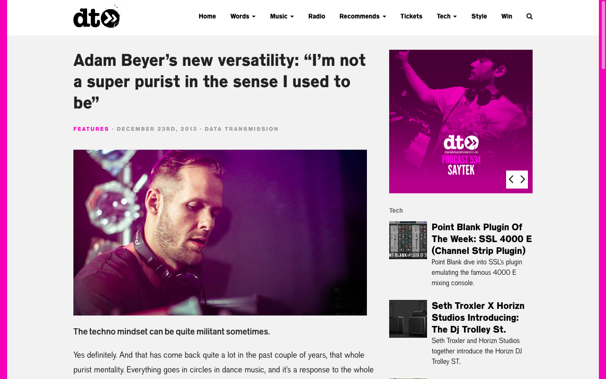
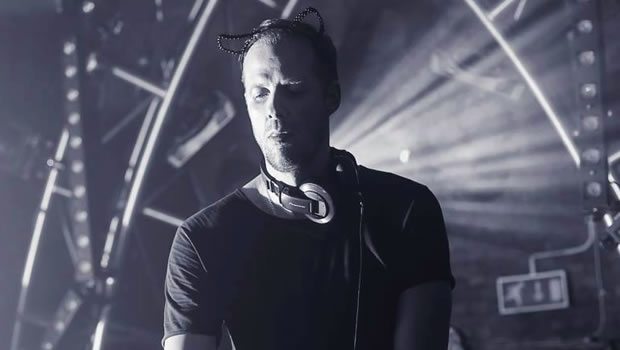
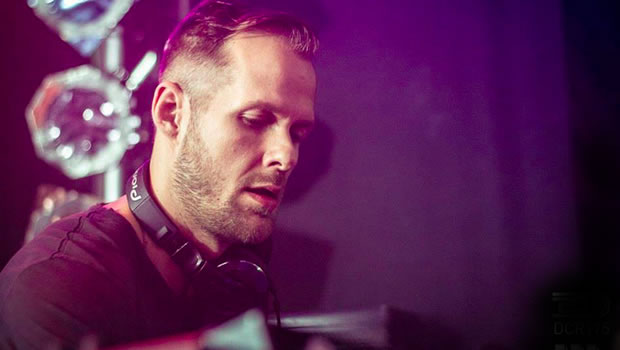

Adam Beyer’s New Versatility: “I’m Not a Super Purist in the Sense I Used to Be”
{kind=link}

Swedish techno icon Adam Beyer released his first record in 1994, which means that this year he’s celebrating 20 years as one of the scene’s strongest, and most enduring titans. Not that he’s devoted any time to self-congratulatory fanfare, though: he’s been way too busy ripping up clubs and festivals around the world, as well as A&Ring for his Drumcode Records imprint and its various sub-labels, which are now as strong as ever in 2013.
Listeners to his hugely successful Drumcode Radio show will be full aware of the exhaustive, and comprehensive array of gigs he’s been playing across the world; everywhere from Amnesia in Milan, the famed Output in New York City, Ultra Europe in Croatia, over to the incoming return to his regular stronghold at Fabric London on December 28th.
Listeners to those sets will also be aware of the truly impressive versatility that’s developed in in recent years; while many might still remember him for the uncompromising hard techno from which he built his name throughout the 90s, nowadays he’s equally adept at taking things deep, or even settling into a polished tech house groove if the occasion so calls for it.
“Versatility is something that I’m trying to show now,” Beyer tells Data Transmission. “And I think that’s one of my strengths; I just like playing different music. I like to play parties in Mykonos where the crowd is nearly progressive, very deep. You can play at 122BPM and it’s still quite banging. And then you play somewhere in Germany on the weekend where it’s all Berghain style toughness. And I also like to go from tough to deep when I’m playing the longer sets”.
For a great example of Beyer giving this versatility a proper workout, look no further than his return to the afore-mentioned Berghain in Berlin during November, for the annual ‘Drumcode Total’ party. His first destination upstairs in the Panorama Bar on Sunday morning, where he commenced a six-hour back-to-back set with his partner-in-crime Ida Engberg, keeping the focus squarely on the house grooves. It was a warmup of sorts for his performance on rhe mainfloor in the late afternoon; a 5-hour set of unbridled intensity, and techno in its most pure and uncompromising form.
On the production front, you can also hear it in his new Ida Engberg collaboration You Know, out now on his Truesoul imprint; what he describes as, “part of me opening up a little.”
In anticipation of his upcoming gig at Fabric in London at Saturday 28th November, Data Transmission sat down with Beyer to delve a little deeper into his approach to the craft.
So October has been a month of 100 percent Drumcode events?
Yeah I think so, every single one during October is a Drumcode party. In a way it’s good to have them all in the same time; although the negative side of it is that the summer season has just finished, and a lot of people might take it a bit more easy in October, while we have all those super big shows with everybody around, which means we always tend to enjoy ourselves a little as well. So it sort of pushes on a bit after the summer for another month with all these big parties in a row [laughs]. But it’s great; it’s nice to be able to do it.
{kind=link}

Two of the times I caught you performing this year were at two of Europe’s biggest festivals; Ultra Europe in Croatia, and Tomorrowland in Belgium. As the commercial side of dance music grows, do you feel that it’s taking the underground with it?
Quite a bit, for sure. Especially in the US. It’s exploded in the past two to three years; every single tour I’ve done has been super amazing, just packed with people who are super excited. With Europe, we already have a very strong scene, and I think in some ways it’s almost going in the opposite direction. Especially central Europe, not so much around the Mediterranean, but more centrally, you’re hearing a lot of Berghain influences again, things are a lot rawer and tougher again, and I think that’s a response to the whole EDM thing amongst the real techno fans in the community, wanting to keep it intact. But still I think it’s growing, and a lot of the kids who were into Swedish House Mafia and Skrillex three years ago are now listening to tech house, and then in another three years they might be listening to techno. But it’s definitely growing, and people are just pouring into the scene, it’s massive.
You’ve been doing this for just on 20 years now. it must feel quite satisfying to be reaching new levels of success even now?
It is satisfying. It’s been a very slow and gradual process. There were never any super highs or super dips; it’s been quite a flat line that has been slowly rising. Which is nice, and I think in techno that’s what you see happening with many of the artists and DJs. It’s hard to get big fast, so you have to push yourself for years and years.
And you’re obviously someone who takes techno very seriously as an artform?
Sure… Yes and no, I would say. I’m not a super purist in the sense like I used to be, when I was younger. I think I’m trying to have a bit of fun with it now as well, and to also play outside of techno with other genres a bit more too, and move out of that stereotype of being locked in.
{kind=link}

The techno mindset can be quite militant sometimes.
Yes definitely. And that has come back quite a lot in the past couple of years, that whole purist mentality. Everything goes in circles in dance music, and it’s a response to the whole commercialisation of the industry. Everything is getting industrialised at the moment, DJs are being industrialised, so for a lot of the kids and the purists, it’s a natural reaction. For me though, I did that whole thing in the 90s, so it’s hard for me to go back now.
Do you find that you mellow in your attitudes a little as you grow older?
Very much so. Some people go the other way, it depends. But for me, playing all over the world for so many years, and also playing in so many different situations. For me, it’s important to be able to adapt and play a different kind of set at certain clubs in Ibiza, as well as when you’re playing at Berghain in Berlin, or somewhere else in South America. And if you don’t know how to adapt, you won’t be doing that full circuit as much as I like to do. So I like to be versatile, while obviously staying within what I like and what my preferences are in terms of the music. I would never compromise what I like. But I just play a lot more wider, depending on where I am.
Do you feel your knowledge of the craft gets better over the years?
I would say yes, though you go in phases. Sometimes things feel great, and you feel you’ve got everything under control, and then some periods not so much. It’s just about being locked in, and constantly searching for music and putting things together, working on your sets. If you slip out of it for a little while, you’re back to zero. But the foundation is still there; you just need to put the pieces back together. But it’s not like you’re always sure of what you’re doing, just because you’ve got 20 years of experience. You need to be sure that you’re always listening to the music and you’re in tune with what you’re doing; and listening to other people play is important as well.
I do find that DJing is what I’m mainly focussing on at the moment, as there’s so much of it. With the radio show, three of the shows every month are live sets from me, so I need to have three hours of new music every month, not played in that order and not the same music. Sometimes that is really difficult, because you might be playing a big event, and you know it needs to be used for the radio the coming week, and you have all these great tracks you might have already played the week before. So you have to find other stuff and shift things around. Sometimes you might have to compromise the set a little so it can work on radio. It’s tricky, and it’s a lot of work.
Your radio show has been a great way to connect with your fans in the past few years.
Yeah it has. I initially wasn’t sure about it, like anything else I guess when you’re starting out with something, but it’s been great for me. Along with the A&Ring for the label, the radio show has been a great way to give something back, and to spread the music. It’s amazing how many people are now connecting to the Drumcode brand and to what we’re doing, and obviously the radio show has been a big, essential part of that. Especially since I’m not producing as much as I would perhaps like to, because I don’t really have the time anymore, I’ve got a family now and so many gigs. Like a lot of DJs at my age, the production slows down a little.
Are you happy with that as a development?
I would love to produce more; I just don’t have the time. To really devote space, and to really sit there in the studio. With two kids and the family life I have, and then all that time on the road, to find time for all those hours in the studio on my own is pretty impossible. I will be going into the studio at the end of the year though for a bit longer than I have in a long time, to do some new stuff. We’ll see what’ll happen with that. The idea is to be able to finish an album for next year.
How’s that coming along as a concept?
It’s still in the earlier stages in my head, so I don’t know yet. It’s probably going to be dance orientated, not just tough, a bit of everything in there, but still with dancing in mind. Back in the day I felt it was more interesting to present people with a different side of me in an album format, but today it just feels that if I’m going to sit there and make an electronica album, it’s not going to be as good as what you’d hear from people who are purely making electronica, so I focus on what works for me. I think that’s what’s been going on, more and more over the years. When I was younger it was easier to experiment a little bit. However, that doesn’t mean it’ll just be a collection of ten Drumcode tracks, it will be something a bit more than that, and with some sort of concept behind it; but still with a clear focus on the dancefloor.
Saturday 28th December sees Adam Beyer join forces with one of his Drumcode cohorts in Alan Fitzpatrick to take hold and seize control of Fabric’s Room One.